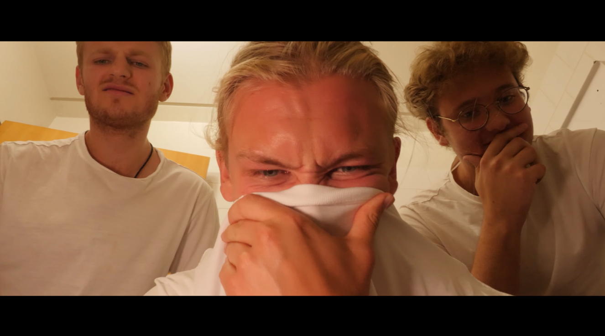
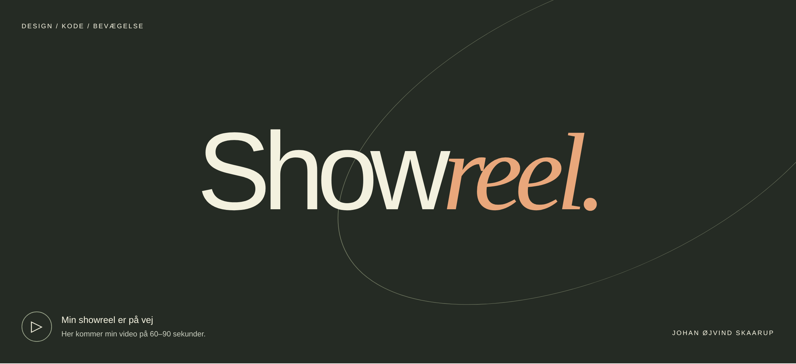
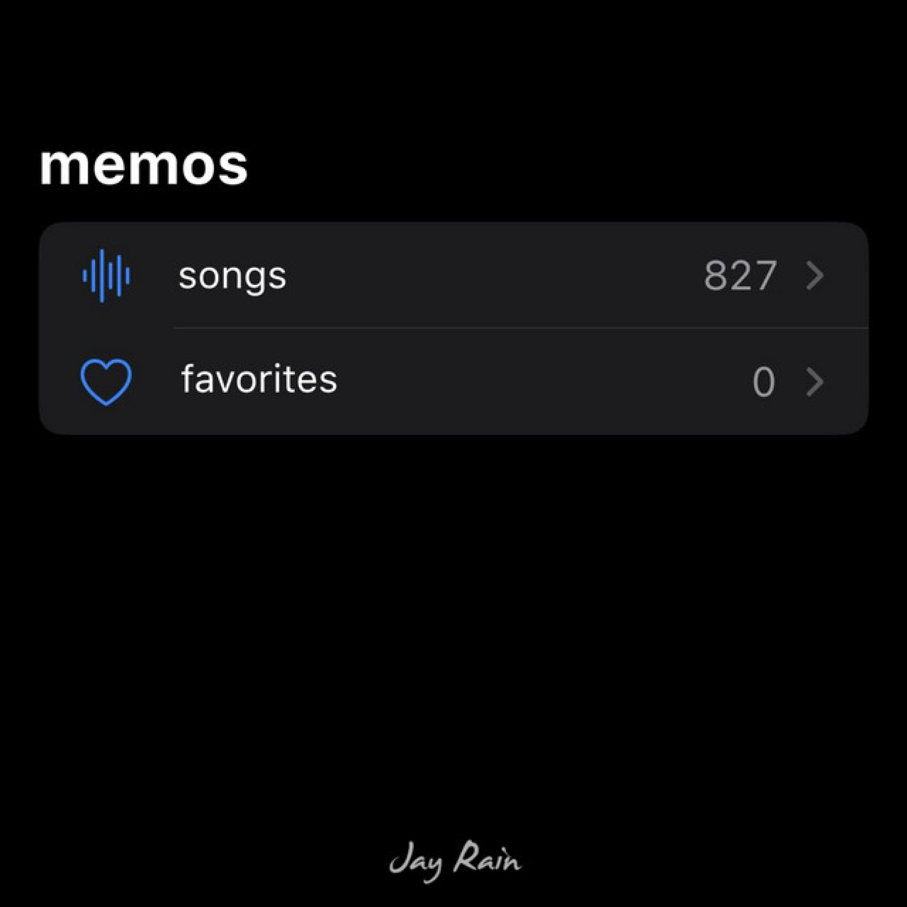
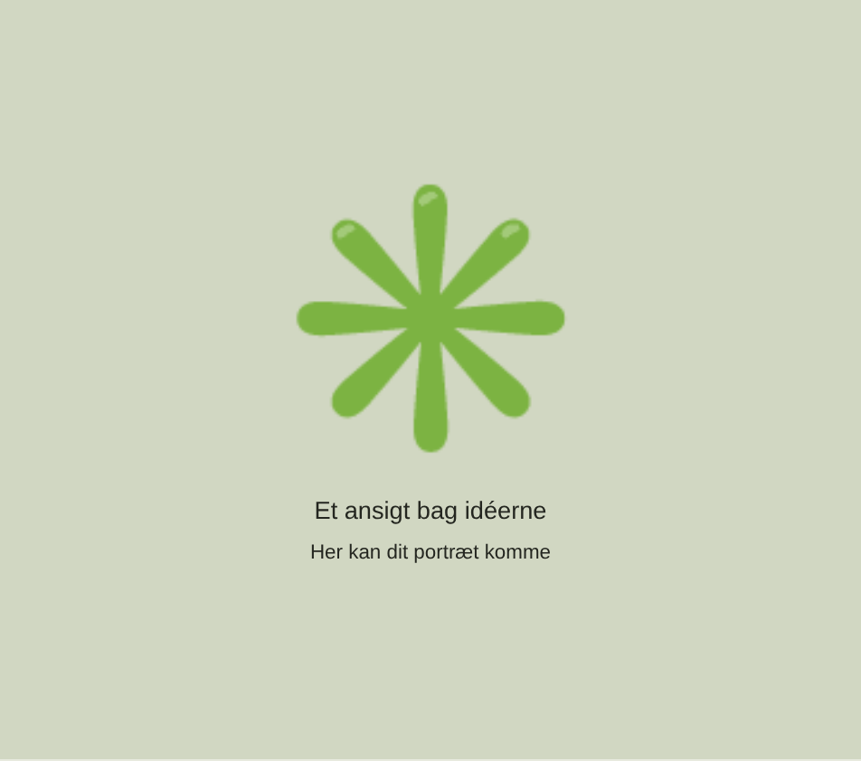

Short films
Edited, produced and filmed by me. Shown in Grand Teater. Made at KBH Film- & Fotoskole.
Welcome to my page containing my showreel, an about me and a page with all the projects I've worked on throughout my life that I deem worth showing. From films to music to video games to literary works. Thank you for visiting.

Some of my proudest work.

Edited, produced and filmed by me. Shown in Grand Teater. Made at KBH Film- & Fotoskole.

An ongoing project being worked on solely by me. Being made in Godot.

Several music productions made by me. Made in FL Studio.

A little about me
Hi, my name is Johan Oejvind Skaarup and I'm 25 years old. The best way I can describe myself is that besides oxygen, I depend on creativity to live. It's a constant need for me - to create something.
Currently, I'm studying Multimediadesign at Zealand. Before that I studied Humanism/Journalism at Roskilde University and went to the film school KBH Film- & Fotoskole.
Besides jobs to pay bills, universities and schools, I've been a filmmaker, writer, social media manager, lyricist, YouTuber, editor, freelancer and a lot more.
What I'm currently working on includes a 2D survival horror video game, writing my next rap album and music production for both projects.
Interested in working together?